小宇宙车机版 0.0.2 · 界面截图
本地渲染（Paparazzi，不需要模拟器），用真实公开内容和真实封面。车机横屏按 1280×720dp 渲染。这些图是用 App 的同一套组件拼出的页面，不是运行中 App 的截屏；转场动画只能在真机上看。
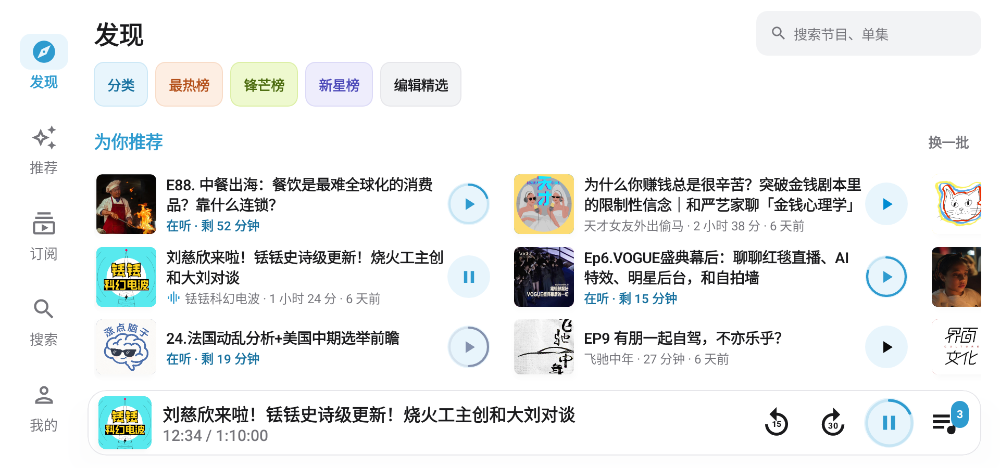
发现浅色。搜索条、入口色块（分类 / 榜单 / 编辑精选）、「为你推荐」横向分页，可换一批
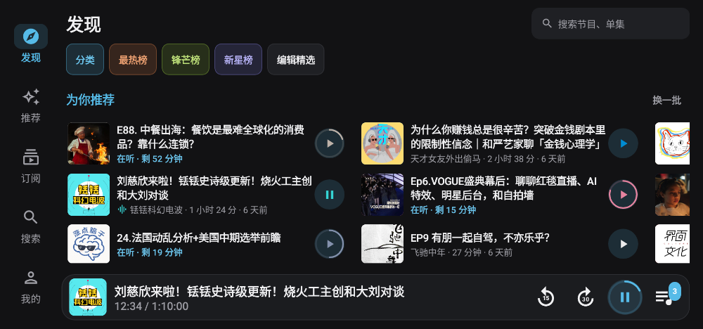
发现 · 深色深色模式；切换外观时颜色渐变过渡
推荐分类胶囊 + 按节目封面取色的单集卡片（分类接口实测可用）
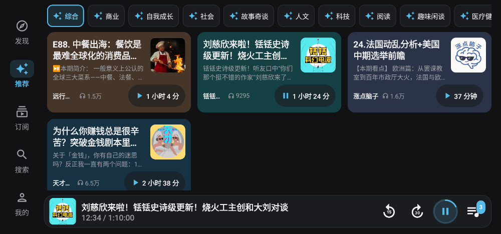
推荐 · 深色卡片底色随深色模式压暗
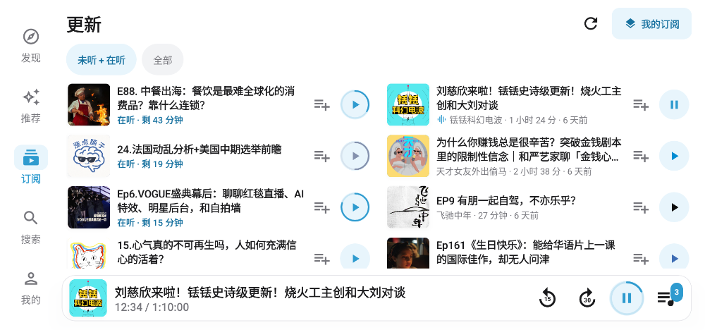
订阅 · 更新订阅节目的新单集，默认只看「未听 + 在听」；在听显示剩余时间和进度环
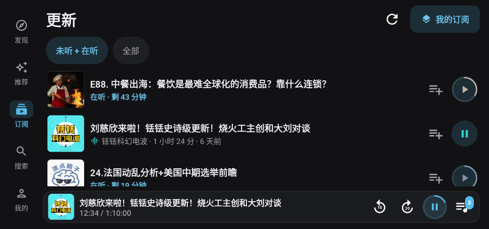
订阅 · 深色 · 特大显示大小调到「特大」时不裁切
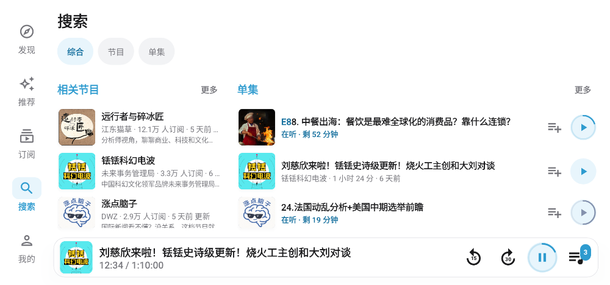
搜索结果左边相关节目、右边单集，关键词高亮；付费单集置灰
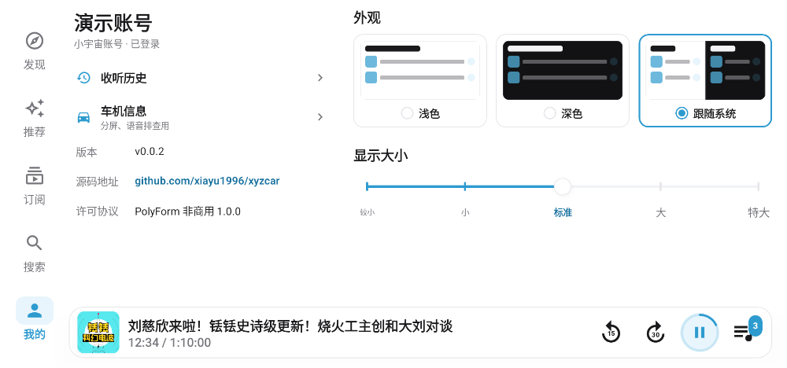
我的账号、收听历史、车机信息、关于；外观三选一、显示大小刻度滑杆
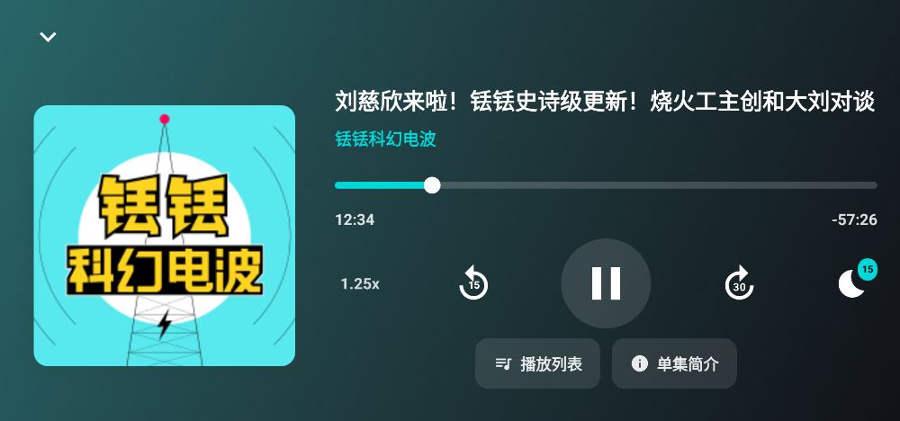
全屏播放页点迷你播放条从底部滑出；进度条可点可拖，倍速、定时关闭
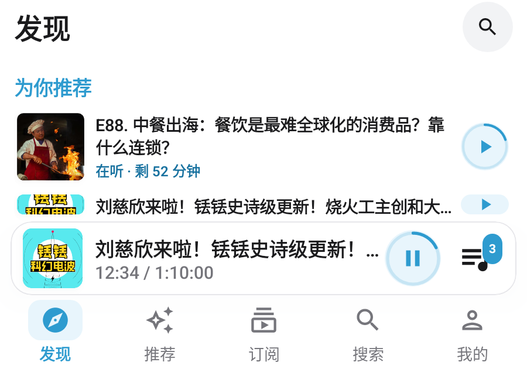
分屏 1/3窄屏时改用底部导航
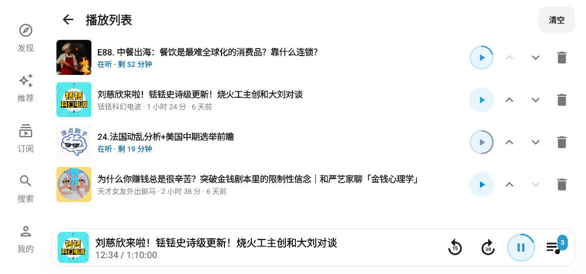
播放列表上移 / 下移 / 移除
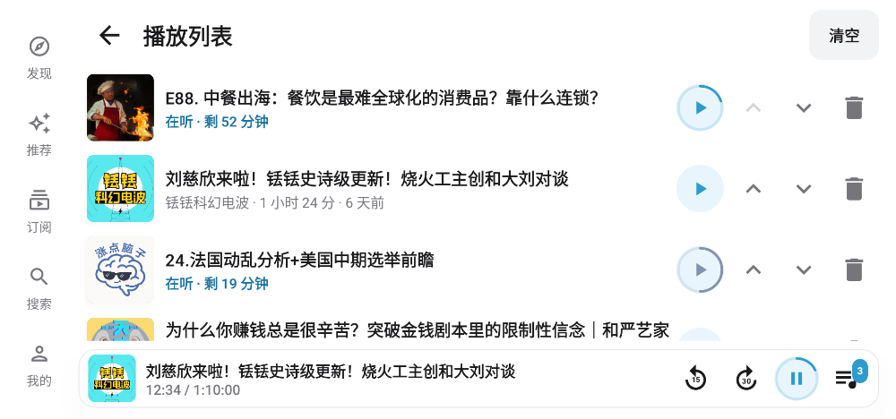
播放列表 · 特大按钮换到第二行，标题不被挤
登录 · 等待扫码横屏浅色
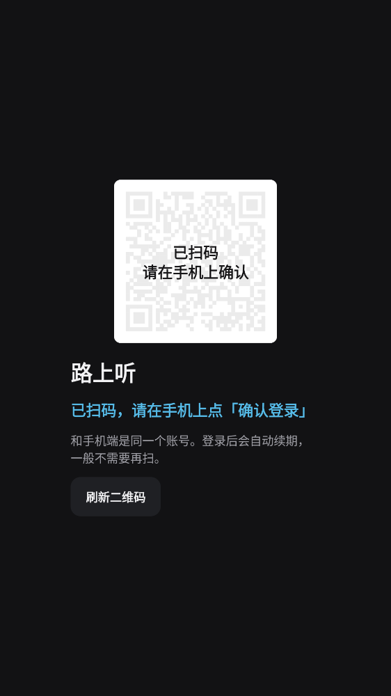
登录 · 已扫码竖屏深色